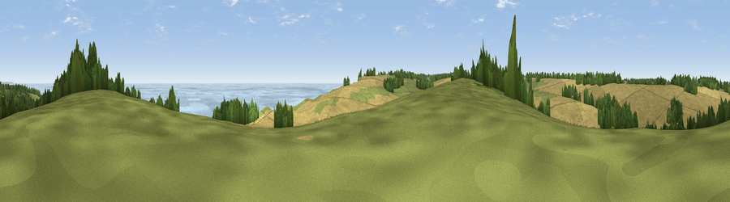

Viewpoint near St. Margaret's at Cliffe
#9428 in England · top 30% of its area beats it · near St. Margaret's at CliffeWhere it is
The exact computed spot (TR 37412 46438). Click the marker for map links.
The view, rendered

A 360° render of this exact spot computed from the terrain model, tree cover and land cover — summer colours, afternoon light, calibrated against photographs of famous viewpoints. Real trees, hedges and buildings will differ in detail.
The panorama
Grey silhouette: terrain skyline in each direction (720 bearings, Earth curvature and refraction included). Dashed green: skyline with trees (+15 m) and buildings (+8 m) as obstacles. Blue strip: how far the ground is visible on each bearing.
Where the view opens
Wedge length = distance to the farthest visible ground on that bearing (vegetation-aware). Rings at 10, 25 and 50 km.
What fills the view
43% cropland · 36% water · 20% grassland · 2% woodland
Angular shares of the visible panorama (visual magnitude), not map area. Landscape diversity 0.49 (0–1 Shannon).
Key numbers
More beautiful places nearby
The staircase of upgrades: each row has a higher view potential than everything closer. Driving times are estimates from straight-line distance, calibrated against real road routing — check an actual route before setting out.
| Place | Direction | Drive | Score |
|---|---|---|---|
| Viewpoint near Kingsdown | NE · 0 km | ~1 min | 64.2 |
| Viewpoint near St. Margaret's at Cliffe | S · 1 km | ~3 min | 68.5 |
| Viewpoint near St. Margaret's at Cliffe | SSW · 4 km | ~9 min | 72.4 |
| Viewpoint near Dover | SW · 7 km | ~14 min | 75.7 |
| Viewpoint near Dover | SW · 9 km | ~18 min | 76.4 |
| Viewpoint near Capel-le-Ferne | SW · 11 km | ~22 min | 77.1 |
| Viewpoint near Capel-le-Ferne | SW · 12 km | ~23 min | 77.9 |
| Viewpoint near Capel-le-Ferne | WSW · 16 km | ~28 min | 80.2 |
51.16788, 1.39462 · source: screening · position refined by local search. Computed location — check access rights before visiting.